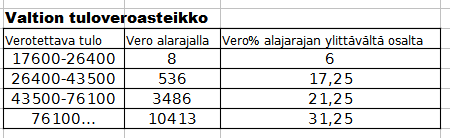
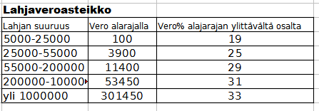

Verotus
Contents
Verotus#
Verokortti#
Perusprosentti ja marginaaliveroprosentti
Verokortissa on tiedot palkansaajan tuloveroista. Se sisältää perusprosentin ja tulorajan, johon saakka sitä sovelletaan, sekä liäsprosentin, joka peritään tulorajan ylittävistä tuloista (ns. marginaaliveroprosentti)
Tuloveron laskeminen verokortin tiedoista#
Maijan verokirjan perusprosentti on 28 ja lisäprosentti on 40. Tuloraja on 3600 eur/kk. Maija ansaitsee maaliskuussa 4100 euroa. Kuinka suuri on siitä pidätettävä vero?
Koska tulot ylittävät tulorajan, tulorajan summasta pidätetään 28% ja ylimenevästä osasta 40%
\(vero = 0.28*3600 + 0.40*(4100-3600) = 0.28*3600 + 0.40*500 = 1208 \)
Vastaus: Vero on 1208 euroa
Tuloveron lisäksi Maijan tulee maksaa muita lakisääteisiä maksuja: kuten sairausvakuutusmaksu, työttämyysvakuutusmaksu, työeläkemaksut. Lisäksi kirkon ja AY-liikkeen jäsenmaksut peritään palkasta näihin kuuluvilta
Valtionvero on progressiivinen#
Vuoden 2019 valtionverotaulukko näytti seuraavalta:

Pekan verotettava tulo oli vuonna 2019 41000 euroa. Laske taulukon perusteella Pekan valtiolle maksama vero kyseisenä vuonna.
Pekan tulot ovat luokassa 26400 - 43500. Luokan alarajan suuruisesta osasta veroa menee 536 euroa, ja alarajan ylittävästä osasta 17.25 prosentin mukaan:
Vero on siten \( 536 + 0.1725*(41000 - 26400) = 3054.50\)
Vastaus: Pekan valtionvero on 3091 euroa vuodessa.
Pääomatulojen verotus#
Pääomatuloja ovat mm. vuokratulot, osingot ja korkotuotot
Pääomaveroprosentti on 30, kun tulot ovat enintään 30000 vuodessa.
Rajan ylimenevältä osalta prosentti on 34.
Maijalla oli vuonna 2022 pääomatuloja 45200 euroa. Laske veron suuruus.
\( 0.30*30000 + 0.34*(45200-30000) = 14168 \)
Vastaus: 14168 Euroa
Nettokorko pankkitalletuksesta / sijoituksesta#
Nettokorko
30 prosentin pääomaveroa sovelletaan talletuskorkoihin.
nettokorko = 0.7 * nimellinen korko
Esim. jos talletuskorko olisi 3.0 %, nettokorko olisi \( 0.7*3.0\% = 2.1\%\) $
Ari tallettaa 2000 euroa pankkiin 2.5% vuosikorolla. Mikä on sijoituksen arvo 5 vuoden kuluttua ottaen huomioon pääomaverotuksen?
Nettokorko (korko verojen jälkeen) = \( 0.7*2.5\% = 1.75 \)
Arvo 5 vuoden kuluttua \( 2000*1.0175^5 = 2181 euroa \)
Vastaus: 2181 Euroa
Arvonlisävero eli ALV#
ALV - prosentit ilmoitetaan aina verottoman hinnan suhteen
Suomessa yleinen ALV -prosentti on 24%
Alennettuja ALV - prosentteja on kaksi:
14% elintarvikkeet, ravintolapalvelut, ….
10% kirjat, lääkkeet, liikunta- ja kulttuuripalvelut, matkustus, majoituspalvelut
\(Verollinen hinta = 1.24*Veroton hinta\)
ALV:n ja verollisen hinnan laskeminen verottomasta hinnasta
Veroton hinta + ALV = verollinen hinta
ALV = 24% verottomasta hinnasta, joten
\(ALV = 0.24*veroton hinta\)
\(verollinen hinta = 1.24*veroton hinta = veroton hinta + ALV\)
Polkupyörän veroton hinta on 450 euroa. Laske ALV ja verollinen hinta?
Verollinen hinta = \( 450*1.24 = 558 \) euroa
ALV = \( 0.24*450 = 108 \) euroa
Vastaus: verollinen hinta = 558 euroa, ALV = 108 euroa
ALV:n ja verottoman hinnan laskeminen verollisesta hinnasta
Suhdelukuina voi käyttää Veroton hinta = 100, ALV = 24, verollinen hinta = 124
\(ALV = 24/124\cdot verollinen hinta\)
\(Veroton hinta = 100/124\cdot verollinen hinta \)
Kuinka paljon lahjan saaja säästää veroissa, jos 60000 euron kertalahjoituksen sijasta lahjoitettaisiin 20000 euroa kolmena vuonna peräkkäin?
Veroton hinta = \( 100/124\cdot 125 = 100.81 euroa \)
ALV = \( 24/124\cdot 125 = 24.19 euroa \)
Vastaus: veroton hinta = 100.81 euroa, ALV = 24.19 euroa
Lahja- ja perintövero on progressiivinen#
Alla on lahjaverotaulukko vuodelta 2022

Mikko sai v. 2022 tädiltään 12000 euroa. Paljonko hän joutuu maksamaan lahjaveroa?
Vero = \( 100 + 0.19*(12000-5000) = 1430 \)
Vastaus: 1430 euroa